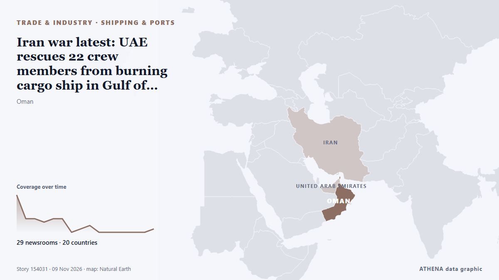

Iran war latest: UAE rescues 22 crew members from burning cargo ship in Gulf of Oman

TAMPA, Fla., Nov 7: U.S. Central Command (CENTCOM) forces disabled a commercial vessel in the Gulf of Oman, Nov. de Arab Times
Relayé de façon indépendante par 29 médias dans 20 pays depuis le 7 nov. ; premier à l'annoncer : Arab Times ; la couverture faiblit. ATHENA juge le risque accru (4.1/10), surtout en raison de la gravité des dommages décrits et de sa portée géographique et sectorielle. La confiance est de 90 % (élevée) : 29 médias indépendants le confirment, avec une fiabilité moyenne des sources de 77 %. Médias par pays : Turquie (4), Émirats arabes unis (4), Arabie saoudite (3). Couverture : du 7 nov. au 9 nov., 30 heures.
Pourquoi c'est important: Les perturbations du commerce, de l'industrie ou des infrastructures se propagent le long des chaînes d'approvisionnement et changent coûts et délais au loin.
Ce qui a changé : 14 nouveaux articles de 13 rédactions dans les 24 heures jusqu'au 9 nov..
Premier titre : US military says it disabled cargo vessel in Gulf of Oman
Les titres sont affichés en anglais, tels que publiés.
Comment lire cette page
- Ce que vous lisez
- 29 médias dans 20 pays ont rapporté cet événement. Les reportages ci-dessous sont classés selon leur ordre de parution ; chaque titre ouvre l'article original. ATHENA n'écrit aucun reportage.
- Notre lecture
- Sous surveillance — Les reportages décrivent une action, ou une décision encore à prendre, entre des États ou des groupes armés. ATHENA suit la suite des événements. Nous guettons quatre types d'évolution : rien de plus, une action ouverte et revendiquée, une action menée par des tiers ou sans revendication, et un accident ou un malentendu. Nous ne prédisons pas lequel se produira.
- Quelle base de preuves
- Correcte Plusieurs médias indépendants concordent, mais le tableau peut encore changer.
Après retrait des doublons, des éléments hors sujet et périmés, 25 des 34 reportages listés sont retenus ; 100 % des titres correspondent à l'événement.
- Ce que cela ne veut pas dire
- ATHENA mesure la façon dont un événement est rapporté, pas sa véracité. Ce n'est ni une prévision, ni un jugement sur qui a raison, ni un conseil.
- Ce qui la changerait
- Des reportages d'autres médias indépendants montrant une évolution différente, ou une confirmation ou un démenti ferme d'une source officielle.
Lecture R2 · actualisée à chaque mise à jour de cette page. ATHENA n'a pas encore publié de bilan de ces lectures ; il sera lié ici le moment venu.
En un coup d'œil
Sélectionné, noté et rédigé par la méthodologie publiée d'ATHENA. Aucun rédacteur n'intervient sur un événement en particulier. Comment il est produit ›
| 07 Nov 20:58 UTC | 11 |
|---|---|
| 07 Nov 22:58 UTC | 4 |
| 08 Nov 00:58 UTC | 4 |
| 08 Nov 02:58 UTC | 3 |
| 08 Nov 04:58 UTC | 4 |
| 08 Nov 06:58 UTC | 4 |
| 08 Nov 08:58 UTC | 0 |
| 08 Nov 10:58 UTC | 1 |
| 08 Nov 12:58 UTC | 2 |
| 08 Nov 14:58 UTC | 0 |
| 08 Nov 16:58 UTC | 0 |
| 08 Nov 18:58 UTC | 0 |
| 08 Nov 20:58 UTC | 0 |
| 08 Nov 22:58 UTC | 0 |
| 09 Nov 00:58 UTC | 0 |
| 09 Nov 02:58 UTC | 1 |
| 07 Nov 21:46 UTC | 3.4 |
|---|---|
| 07 Nov 21:54 UTC | 2.3 |
| 07 Nov 22:30 UTC | 5.1 |
| 07 Nov 22:54 UTC | 2.7 |
| 07 Nov 23:11 UTC | 4.0 |
| 07 Nov 23:25 UTC | 4.5 |
| 08 Nov 04:14 UTC | 4.4 |
| 08 Nov 12:59 UTC | 3.9 |
| 09 Nov 03:02 UTC | 4.1 |
Pourquoi ces chiffres
Importance
Risque
Confiance
La couverture : qui l'a annoncé, et quand
titre tel que publié · ouvre l'original- Arab Times · KoweïtUS Forces Disable Iran-Bound Cargo Ship in Gulf of Oman After Repeated Warnings
- The Canadian Press (via CityNews) · CanadaUS military says it fired on commercial vessel in Gulf of Oman after it attempted to breach blockade
- APA (English) · AzerbaïdjanUS forces strike commercial vessel in Gulf of Oman over alleged Iran blockade violation
- Anadolu Agency (English) · TurquieUS forces disabled cargo ship in Gulf of Oman: CENTCOM
- TASS (English) · RussieUS Armed Forces disabled mercantile ship in Gulf of Oman — CENTCOM
- The Straits Times · SingapourUS military says it disabled cargo vessel in Gulf of Oman
- Greek City Times · GrèceUS Aircraft Strike Merchant Ship in Gulf of Oman
- Arab News · Arabie saouditeUS military says it disabled cargo vessel in Gulf of Oman
- Shafaq News (English) · IrakUS disables ship attempting to breach Iran blockade
- Anadolu Agency (English) · TurquieCargo ship involved in military incident in Gulf of Oman: UK maritime agency
- APA (English) · AzerbaïdjanUK maritime agency reports bulk carrier, military forces involved in incident in Gulf of Oman
- Middle East Eye · INTBulk carrier and military forces involved in Gulf of Oman incident: UKMTO
- The Maritime Executive · États-UnisUS Forces Disable First Cargo Ship in a Month Sailing from Iranian Port
- Arab News · Arabie saouditeBulk carrier, military forces involved in latest Gulf of Oman incident, UKMTO says
- Xinhua (English) — page reader · ChineU.S. forces disable commercial cargo vessel in Gulf of Oman: CENTCOM
- Gulf News · Émirats arabes unisUS releases video of strike on cargo ship in Gulf of Oman amid Iran blockade enforcement
- The Hill · États-UnisUS military fires at cargo ship in Gulf of Oman
- Gulf News · Émirats arabes unisUAE National Guard rescues 22 crew members after cargo ship fire in Gulf of Oman
- Middle East Eye · INTUAE rescues 22 people from burning cargo ship in Sea of Oman
- Khaleej Times (working feed) · Émirats arabes unisUAE rescues 22 crew members after cargo ship catches fire in Oman Sea
- The National · Émirats arabes unisIran war latest: UAE rescues 22 crew members from burning cargo ship in Gulf of Oman
- Korea Herald · Corée du SudUS military says it fired on commercial vessel in Gulf of Oman after it attempted to breach blockade
- Kurdistan24 (English) · IrakCENTCOM Disables Cargo Ship in Gulf of Oman Over Iran Blockade
- Al-Monitor · États-UnisUS military says it disabled cargo vessel in Gulf of Oman
- Marine Insight · Inde22 Crew Rescued By UAE National Guard After Cargo Ship Fire
- Marine Insight · IndeUS Forces Disable Cargo Ship After It Allegedly Defies Iran Blockade
- Khaama Press · AfghanistanUAE Rescues 22 Crew Members After Cargo Ship Fire in Gulf of Oman
- Asharq Al-Awsat (English) · Arabie saouditeUAE Says It Rescued 22 People after Cargo Ship Caught Fire in Sea of Oman
- Anadolu Agency (English) · TurquieUAE National Guard rescues 22 after fire breaks out on cargo ship in Gulf of Oman
- Al Jazeera English · QatarUS military attacks cargo ship in the Gulf of Oman
- Euronews English · FranceUS forces strike commercial vessel in Gulf of Oman after crew 'ignored repeated warnings'
- The Independent · Royaume-UniUS military says it fired on ship that visited Iranian port after it tried to breach Strait of Hormuz blockade
- The Business Standard (Bangladesh) (working feed) · BangladeshIran suggests blasts are not US attacks as both sides report ships hit
- SeaNews Türkiye · TurquieUS Military Strikes HUDA Vessel Amid Rising Maritime Tensions in Gulf of Oman